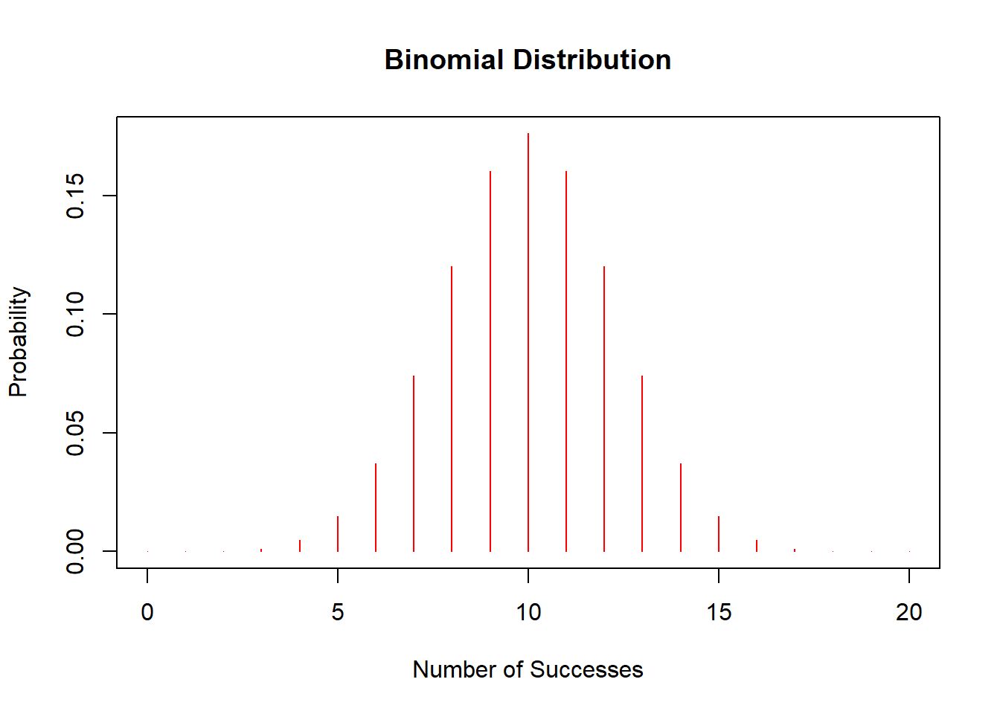
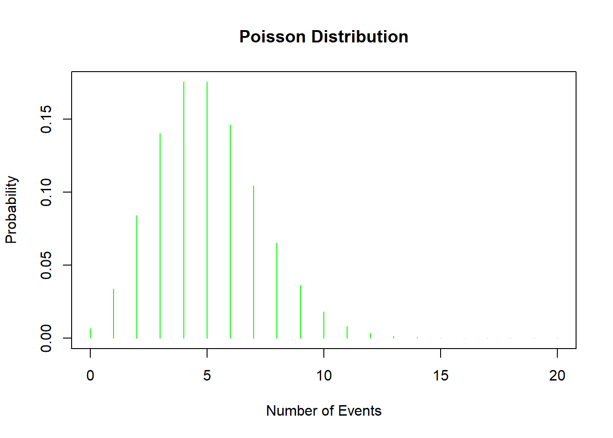
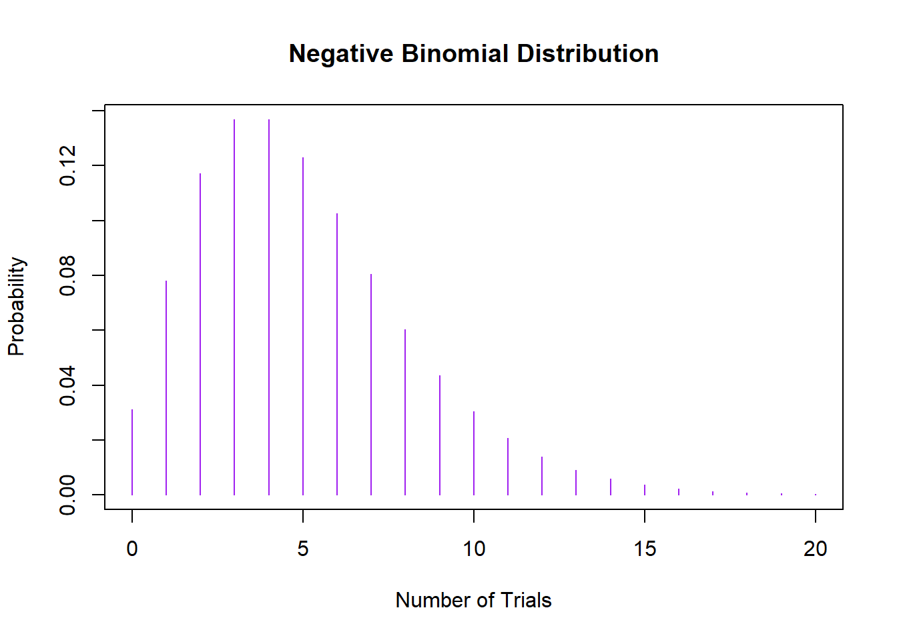
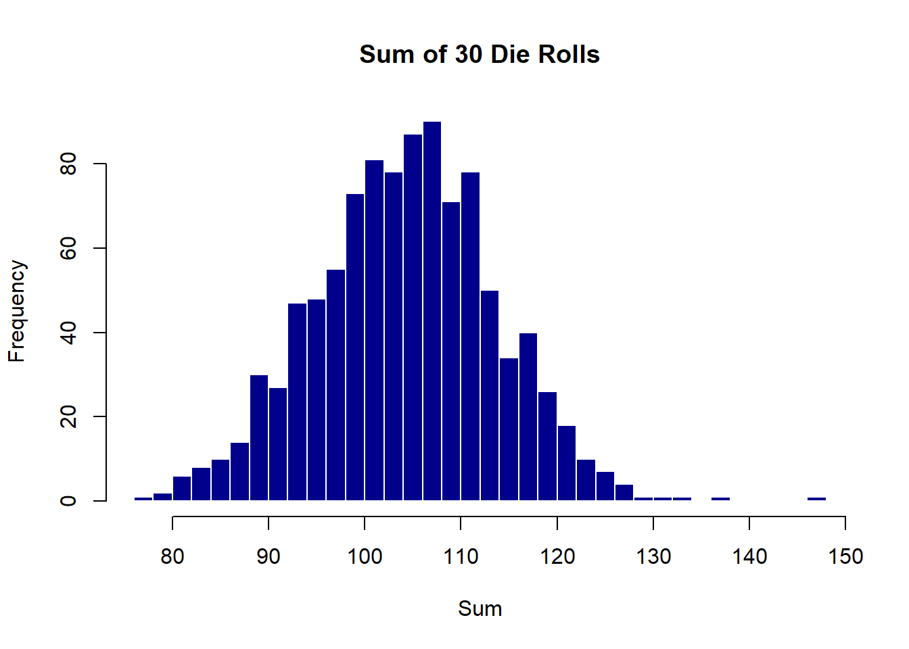

Chapter 2 Exploring Probability Distributions with Visuals
Ever wonder how different situations in life can be understood through statistics? Probability distributions are like the backbone of statistical reasoning, helping us predict and understand the world in terms of probabilities. Let’s dive into some key distributions, visualizing each to make the concepts stick.
2.1 Normal Distribution: The Bell
Think of the Normal distribution as the classic bell curve, a favorite in statistics because it pops up everywhere, from heights of people to errors in measurements. It’s symmetrical and described by just two parameters:
- Mean (the middle where it peaks)
- Standard Deviation (how spread out it is)
It described mathematically as:
\[ f(x) = \frac{1}{\sqrt{2\pi\sigma^2}} e^{-\frac{(x-\mu)^2}{2\sigma^2}} \]
where:
- \(\mu\) is the mean or expectation of the distribution,
- \(\sigma\) is the standard deviation,
- \(\sigma^2\) is the variance.
Let’s Draw It:
# Plotting a Normal Distribution
x <- seq(-4, 4, length = 100)
y <- dnorm(x, mean = 0, sd = 1)
plot(x, y, type = 'l', col = 'blue', main = 'Normal Distribution', xlab = 'X', ylab = 'Probability Density')
2.2 Binomial Distribution: Counting Successes
The Binomial distribution counts successes in a fixed number of independent trials, like flipping a coin or passing/failing a test. Formally:
\[ P(X = k) = \binom{n}{k} p^k (1-p)^{n-k} \]
where: - \(n\) is the number of trials, - \(k\) is the number of successes, - \(p\) is the probability of success on a single trial.
Let’s Visualize It:
# Plotting a Binomial Distribution
x <- 0:20
y <- dbinom(x, size = 20, prob = 0.5)
plot(x, y, type = 'h', col = 'red', main = 'Binomial Distribution', xlab = 'Number of Successes', ylab = 'Probability')
2.3 Poisson Distribution: Counting Events
The Poisson distribution is perfect for modeling the number of events happening over a fixed period or space, like emails arriving in your inbox or buses arriving at a station, assuming these events happen independently at a constant rate. Resulting in this PMF:
\[ P(X = k) = \frac{\lambda^k e^{-\lambda}}{k!} \]
where: - \(\lambda\) is the average number of events in an interval, - \(k\) is the number of occurrences of the event.
Let’s Check It Out:
# Plotting a Poisson Distribution
x <- 0:20
y <- dpois(x, lambda = 5)
plot(x, y, type = 'h', col = 'green', main = 'Poisson Distribution', xlab = 'Number of Events', ylab = 'Probability')
2.4 Negative Binomial Distribution: Waiting for Successes
When you’re counting the number of trials until you achieve a certain number of successes, and those successes have a certain probability of happening, you’re looking at the Negative Binomial distribution. It’s like the Binomial distribution’s more complex sibling and is great for dealing with over-dispersed count data, where variance exceeds the mean.
Mathmatically that comes to this PMF:
\[ P(X = k) = \binom{k-1}{r-1} p^r (1-p)^{k-r} \]
where: - \(k\) is the total number of trials, - \(r\) is the number of successes to be achieved, - \(p\) is the probability of a success on an individual trial.
Let’s Plot This Too:
# Plotting a Negative Binomial Distribution
x <- 0:20
y <- dnbinom(x, size = 5, prob = 0.5)
plot(x, y, type = 'h', col = 'purple', main = 'Negative Binomial Distribution', xlab = 'Number of Trials', ylab = 'Probability')
2.5 Central Limit Theorem: What Happens When Distributions Come Together?
Have you ever wondered what occurs when you start adding up different things, like ingredients in a recipe? In the world of statistics, when we begin adding up different distributions, we often end up with results that are surprisingly normal! This phenomenon is rooted in a fundamental concept called the Central Limit Theorem.
The Central Limit Theorem is a statistical theory that says if you take an adequately large number of independent variables from any distribution (even non-normal ones), sum them up, then the normalized sum tends toward a normal distribution as the number of variables grows. This is true regardless of the shape of the original distribution, provided the variables are identically distributed and independent.
\[ \bar{X}_n \sim N\left(\mu, \frac{\sigma^2}{n}\right) \]
as \(n\) approaches infinity, where: - \(\bar{X}_n\) is the sample mean, - \(\mu\) is the population mean, - \(\sigma^2\) is the population variance, - \(n\) is the sample size.
Why does this matter? It allows statistitians to use normal probability calculations in many situations and simplifies analysis by bringing the powerful toolbox of methods developed for normal distributions.
2.5.1 Central Limit Theorem in R
Let’s simulate this with a simple example in R. Suppose we repeatedly roll a six-sided die and record the sums. While a single die roll follows a uniform distribution, the sum of multiple dice rolls will tend toward a normal distribution.
# Simulate rolling a die
set.seed(123)
rolls <- replicate(1000, sum(sample(1:6, 30, replace = TRUE)))
# Plot the distribution of sums
hist(rolls, breaks = 30, main = "Sum of 30 Die Rolls", xlab = "Sum", col = "darkblue", border = "white")
2.5.2 What’s Happening Here?
- Single Die Roll: Each roll is uniform; any number between 1 and 6 is equally likely.
- Sum of Rolls: When we add up 30 rolls, the sums distribute themselves in a bell-shaped curve around the expected value (which is 105, calculated as 3.5*30 where 3.5 is the mean of a single die roll).
This simulation is a practical example of the Central Limit Theorem in action. It shows how, even though individual die rolls don’t follow a normal distribution, their sum does as the number of rolls increases.
2.5.3 Implications
This property is particularly powerful in fields like data science and economics where sums and averages of large datasets are common. It justifies the assumption of normality in many statistical tests and confidence interval calculations, making it easier to draw inferences about the population from the sample data.